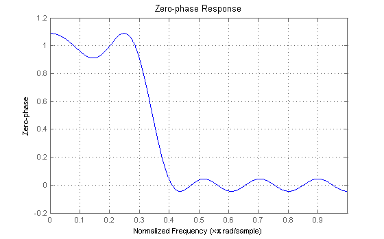
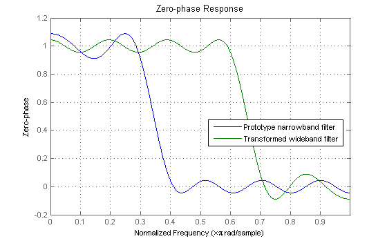
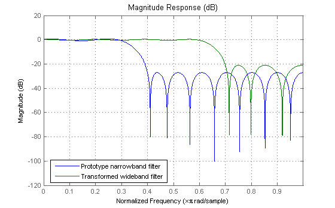
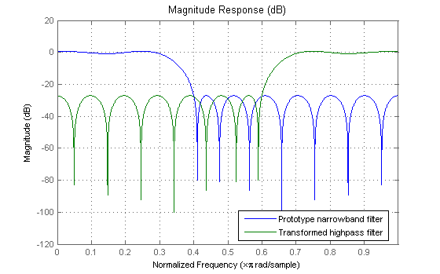
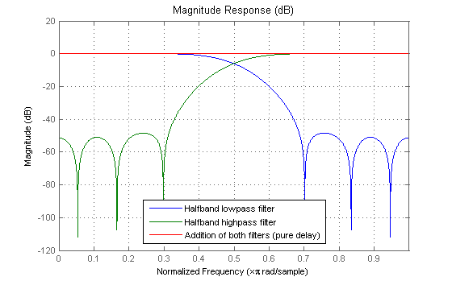
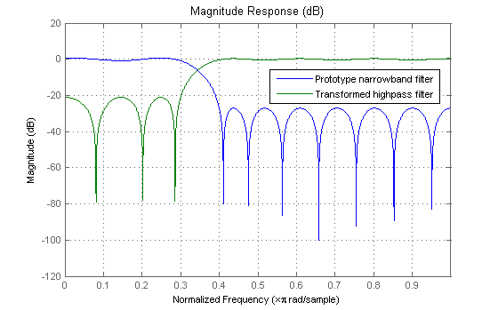

This demonstration shows simple ways of obtaining wideband lowpass, and narrowband and wideband highpass filters from a prototype linear-phase FIR filter of even order (Type I).
By narrowband FIR filter we mean one whos stopband-edge frequency is less than 0.5*pi rad/sample. For instance, consider the following type I filter:
F = [0 .3 .4 1]; % Frequency vector A = [1 1 0 0]; % Magnitude vector R = [0.1 0.05]; % Passband/stopband ripples % Design minimum even-order filter that meets specs b = firgr('mineven',F,A,R); hnb = dfilt.dfsymfir(b); h = fvtool(hnb); set(h,'MagnitudeDisplay','Zero-phase'); set(h, 'Color', [1 1 1])
The actual ripples are slightly smaller than 0.1 and 0.05. A wideband lowpass filter can be obtained from the prototype using FIRLP2LP. The frequency edges are complementary with respect to pi, i.e. Fpassnew = pi - Fstopold; Fstopnew = pi - Fpassold
In addition, the passband ripple of the prototype becomes the stopband ripple of the wideband filter and the stopband ripple of the prototype becomes the passband ripple of the wideband filter.
bwb = firlp2lp(b); hwb = dfilt.dfsymfir(bwb); addfilter(h,hwb); legend(h,'Prototype narrowband filter','Transformed wideband filter');
The transformation can be applied directly to DFILT objects as well
hwb = firlp2lp(hnb); set(h, 'Filters', [hnb,hwb], 'MagnitudeDisplay', 'Magnitude (dB)'); legend(h,'Prototype narrowband filter','Transformed wideband filter');
We can obtaina narrowband highpass FIR filter from the prototype narrowband lowpass by using the FIRLP2HP fuction.
hnbhp = firlp2hp(hnb); set(h, 'Filters', [hnb,hnbhp]); legend(h,'Prototype narrowband filter','Transformed highpass filter');
For this case, the frequency edges are related as follows: Fpassnew = pi - Fpassold; Fstopnew = pi - Fstopold
The passband and stopband ripples are not interchanged in this case.
If we use the transformation from lowpass to highpass with a lowpass halfband filter, we obtain a highpass halfband filter. Moreover, the two filters are strictly complementary, i.e. they add up to a delay.
blp = firhalfband(18,hamming(19)); hlp = dfilt.dfsymfir(blp); hhp = firlp2hp(hlp); hpar = parallel(hlp,hhp); set(h, 'Filters', [hlp,hhp,hpar]); legend(h,'Halfband lowpass filter',... 'Halfband highpass filter','Addition of both filters (pure delay)');
Finally, we can obtain a wideband highpass from a narrowband lowpass by using the 'wide' string.
hwbhp = firlp2hp(hnb,'wide'); set(h, 'Filters', [hnb,hwbhp]); legend(h,'Prototype narrowband filter','Transformed highpass filter');
For this case, the frequency edges are related as follows: Fpassnew = Fstopold; Fstopnew = Fpassold
The passband and stopband ripples are interchanged in this case.